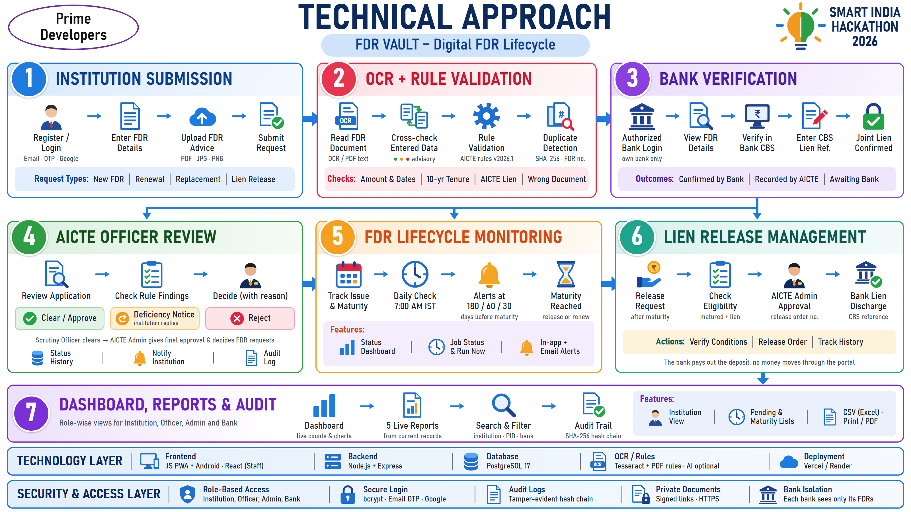
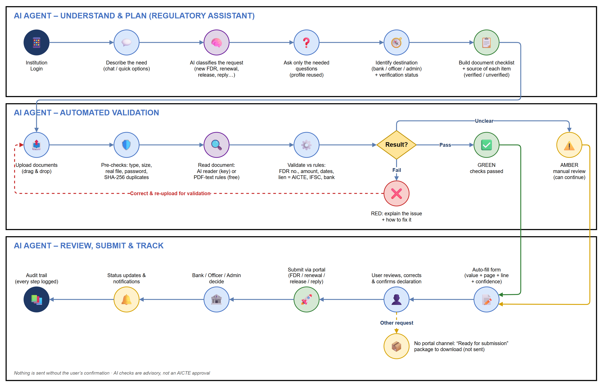

Team
Prime Developers
Smart India Hackathon 2026
Prime Developers
Smart India Hackathon 2026
Version 1.1.0 · 30 October 2026
Covers the code on branch main (commit 031bfa5)
Institution app: fdr-vault.vercel.app
Officer portal: fdr-vault-sbf7.vercel.app/officer
Admin console: fdr-vault-sbf7.vercel.app/admin
API server: fdr-vault-api-d2i1.onrender.com
Source code: github.com/Mrityun-G/FDR-Vault-
Demo password for all 4 demo accounts: Sih@2026Demo
FDR Vault is a working prototype of the AICTE Intelligent Regulatory Validation Platform (AI-IRVP). It digitises how AICTE approves technical institutions and manages each institution's security deposit, kept as a Fixed Deposit Receipt (FDR) under joint lien with the Regional Officer, AICTE.
Institutions apply and manage their deposits from a mobile app (installable web app and Android APK). AICTE scrutiny officers, bank officials and administrators work in a staff website with two portals. Both front ends talk only to the project's own API server, and one PostgreSQL database enforces every rule, permission and status change. Documents are read automatically and checked against AICTE norms before a human looks at them, the issuing bank confirms the lien, and the system reminds institutions before every maturity.
| Component | Address | Used by |
|---|---|---|
| Institution app | https://fdr-vault.vercel.app | Institutions (applicants), on phone or desktop |
| Officer portal | https://fdr-vault-sbf7.vercel.app/officer | Scrutiny officers (REVIEWER), bank officials (BANK_OFFICIAL) |
| Admin console | https://fdr-vault-sbf7.vercel.app/admin | AICTE administrators (ADMIN) |
| API server | https://fdr-vault-api-d2i1.onrender.com | Both front ends (no direct user access) |
| Android app | dist/AICTE-Institution-Portal-debug.apk in the repository | Institutions (debug build, app id com.fdrportal.aicteinstitution) |
| Source code | https://github.com/Mrityun-G/FDR-Vault- | Developers and evaluators |
Under AICTE's approval process, an institution keeps a security deposit / corpus fund as a Fixed Deposit Receipt for a 10-year term, under irrevocable joint lien in favour of the Regional Officer, AICTE. The issuing bank marks the lien in its Core Banking System (CBS). The deposit must be renewed before it matures, and the lien can be discharged only after AICTE approves its release. Each approval application (new programme, extension of approval, intake change and others) is also scrutinised against norms for documents, faculty, built-up area and the deposit.
When this is handled with paper receipts, letters and spreadsheets, the following problems appear:
| Challenge | Impact |
|---|---|
| FDR receipts and bank letters checked by hand | Slow scrutiny, inconsistent decisions, typing errors in deposit numbers, amounts and dates. |
| Lien confirmed by letter or email | No reliable record of which bank official confirmed the lien, when, and with what CBS reference. |
| Maturity dates tracked manually | Deposits lapse without renewal; releases are approved late or without checking maturity and lien status. |
| Same document reused by different institutions | Recycled or forged evidence is hard to notice when files are checked one application at a time. |
| Requirements spread across handbook clauses | Institutions submit incomplete requests, which leads to repeated deficiency notices and delays. |
| No single register of deposits | Hard to report corpus held, deposits awaiting verification, upcoming maturities and pending requests. |
| No tamper-evident record of decisions | Weak accountability: changes to records and decisions cannot be proven later. |
Seven norm checks (documents, certificate validity, identity, duplicates, faculty ratio, built-up area, FDR corpus) produce Passed / Warning / Critical findings with handbook clause labels.
The SHA-256 fingerprint of every uploaded file is compared on the server against all institutions' filings, which no single institution could see.
Values are read from the FDR advice with the page and line they came from and cross-checked against the form (GREEN / AMBER / RED). A free path (PDF text rules + Tesseract OCR) works without any AI key.
Bank officials see only their own bank's deposits. They confirm the lien with a CBS reference and later record its discharge.
New FDR → lien confirmation → reminders at 180 / 60 / 30 days and at maturity → renewal or replacement → release order → bank discharge.
The Regulatory Assistant shows the source and verification status of every required document. Only verified or portal rules can block a submission.
The audit log is append-only and hash-chained per institution (prev_hash → sha256_hash), so any edit breaks the chain.
Installable app and Android APK, full English / हिन्दी interface, offline banner, built for low bandwidth and small screens (320 px and up).
The platform has four roles. The user interface shows each role only the work it is allowed to do, and the database enforces the same rules again, so hiding a button is never the only protection.
| Role | Signs in at | Can do | Cannot do |
|---|---|---|---|
| Institution INSTITUTION | Institution app | Register the institution; file 5 application types; upload documents; submit a new FDR; request renewal, replacement or lien release; answer deficiency notices; raise tickets; download CSV reports; use the AI Regulatory Assistant. | See any other institution's data; change a decision; approve anything; edit a recorded FDR directly. |
| Scrutiny Officer REVIEWER | Officer portal | Start scrutiny; issue a deficiency notice (request clarification); override a non-passed finding with a written justification and handbook citation; clear or reject an application with a rationale. | Give final approval; decide FDR renewal, replacement or release requests. |
| Bank Official BANK_OFFICIAL | Officer portal | See the FDRs of their own bank only; confirm the joint lien with a CBS reference; read the AICTE release order; record the lien discharge with a CBS reference. | See other banks' deposits; act on applications; release a lien AICTE has not approved. |
| Administrator ADMIN | Admin console | Everything a scrutiny officer can do plus final approval; decide renewal, replacement and release requests (release needs an order number); manage users and invitations; maintain regulatory sources; view and run the daily reminder job; record a lien as "AICTE recorded". | Disable their own account; release an FDR that has not matured or has no recorded lien. |
FDR Vault is a three-tier system. Two front ends are static sites on Vercel. One Node.js API server on Render holds every secret and is the only component that connects to PostgreSQL. Browsers never connect to the database.
| Layer | Technology (version in the repository) | Purpose |
|---|---|---|
| Institution app | HTML5, CSS, plain JavaScript; PWA (service worker, web manifest); Capacitor 6 (@capacitor/android, filesystem, share) | Mobile-first institution portal; Android APK from the same code |
| Staff portal | React 19, Vite 8, TypeScript, Tailwind CSS 4, Recharts 3, Motion 12, lucide-react | Officer portal and Admin console |
| API server | Node.js ≥ 22.18 (Render runs 24), Express 5.2.1, helmet 8.2.0, cors 2.8.5, pg 8.23.0, nodemailer 10.0.16 | Auth, RPC gateway, storage, live updates, scheduler, email |
| Document reading | pdfjs-dist 4.10 (PDF text), tesseract.js 5.1 with bundled English data (OCR), @anthropic-ai/sdk 1.1.0 with model claude-opus-5-5 (optional) | Read FDR advice and certificates; extract values with evidence |
| Database | PostgreSQL 17 (14+ supported), pgcrypto, row-level security, PL/pgSQL functions | Data, rules, workflow, documents, audit |
| Testing | embedded-postgres 17 (real PostgreSQL in tests), PGlite 0.2.17, puppeteer-core 23.11 driving Microsoft Edge | Database, API and browser end-to-end tests |
| Hosting & CI | Vercel (2 projects), Render (web service + PostgreSQL, Singapore), GitHub Actions | Deployment, automatic migrations, daily wake-up |
| Design & docs | draw.io diagrams, headless-browser rendering | Methodology and flow diagrams |
The figure below is the project's Technical Approach. It shows the seven stages from institution submission to dashboards and audit, plus the technology and security layers.

| # | Stage | What happens |
|---|---|---|
| 1 | Institution submission | The institution signs in (email, OTP or Google), enters FDR details, uploads the FDR advice (PDF / JPG / PNG) and submits a new FDR, renewal, replacement or lien-release request. |
| 2 | Reading + rule validation | The document is read (PDF text rules or OCR; Claude only if configured) and cross-checked against the entered data (GREEN / AMBER / RED, advisory). Server rules check amount, dates, 10-year tenure, AICTE lien and duplicates (SHA-256 and FDR number). |
| 3 | Bank verification | The issuing bank's official (own bank only) views the deposit, verifies it in the bank's CBS and enters the CBS lien reference. The FDR shows who confirmed it: bank, AICTE-recorded, or awaiting bank. |
| 4 | AICTE officer review | The scrutiny officer reviews the application and rule findings, then clears it, issues a deficiency notice (the institution replies) or rejects it, always with a written reason. The AICTE administrator gives final approval and decides FDR requests. |
| 5 | Lifecycle monitoring | Issue and maturity dates are tracked. A daily job from 07:00 IST sends in-app and email alerts at 180, 60 and 30 days before maturity and on maturity. Admins see the job status and can run it now. |
| 6 | Lien release | After maturity the institution requests release. Only a matured FDR with a recorded lien is eligible; the admin approves with the AICTE release order number, then the bank records the lien discharge with a CBS reference. The deposit is paid out by the bank; no money moves through the portal. |
| 7 | Dashboards, reports, audit | Role-wise dashboards with live counts and charts, five live reports (CSV), search and filters by institution, PID and bank, and a hash-chained audit trail. |
The institution app has five main tabs — Dashboard, Applications, FDRs, Alerts and Profile — plus the AI Regulatory Assistant and a built-in help guide.
| Screen | Features |
|---|---|
| Onboarding | Three swipeable slides (Skip / Next / Get Started); a looping slideshow of the AICTE New Delhi and Mumbai office photos (still when reduced motion is on); Privacy Policy, Help & Support and Terms; shown once, replayable from Login. |
| Login & registration | Email and password with Remember me; sign-in with a 6-digit email code (valid 10 minutes); Google sign-in; password reset; one-tap demo login; self-registration of the institution (head of institution, PID, name, district, state; a new PID is issued if none is given, and the AICTE region follows the state). |
| Dashboard | Live counts, quick actions, alerts, total FDR corpus under joint lien, recent activity. |
| New application wizard | Institution → Programme → FDR → Documents, with live checks against AICTE norms; real uploads with progress, SHA-256 and page count; on-device document reading; server validation (dry run); review; e-sign (simulated Aadhaar eSign / DSC); submission with a server-issued number such as APP-2026-EOA-00012 and a downloadable acknowledgement. Drafts are saved on the server. |
| My Applications | Filters, search and drafts; status timeline; rule findings; documents opened through secure links; the official deficiency notice (print or PDF); a compliance response that creates a new version. |
| FDRs | Register of the institution's deposits; new FDR with evidence; renewal or extension; replacement or bank change; lien-release request; pending states; who confirmed the lien (bank or AICTE); release steps up to the bank's discharge. |
| Alerts | Notifications that refresh live from the server (Server-Sent Events), with links to the related record; mark one or all as read. |
| Profile | Institution details (name and PID locked); contact and nodal officer; change password (signs out other sessions); Compliance & Verification (rule matrix and simulated issuing-authority checks); activity log; grievance tickets; CSV reports (FDR register, applications, activity); AICTE handbooks and leadership; Help; About; Logout. |
| FDR Vault Guide | A help chat inside the app with a curated knowledge base, a guided 5-minute demo tour and "Take me there" buttons. It uses no AI service and works offline. |
| Across the app | English / हिन्दी switch (whole interface; institution data and legal notice text stay as issued); offline banner; loading states and double-tap protection; field-level server errors and retry; "unsaved changes" prompt on forms; accessible labels. |
| Android app | Capacitor 6 build of the same code. Downloads (acknowledgement, FDR advice, CSV, deficiency notice) open in the system share sheet. Google blocks OAuth inside app WebViews, so the Android app offers email/password or OTP instead. |
| Type (code) | Number prefix | Extra fields required |
|---|---|---|
| New Programme NEW_PROGRAMME | APP-yyyy-NEW- | Programme name |
| Extension of Approval EOA | APP-yyyy-EOA- | — |
| Infrastructure Update INFRASTRUCTURE_UPDATE | APP-yyyy-INFRA- | Description of the change |
| Intake Variation INTAKE_VARIATION | APP-yyyy-INTAKE- | Programme name |
| Closure CLOSURE | APP-yyyy-CLOSURE- | Closure reason and confirmation that liabilities are cleared |
Every application also needs the academic year (yyyy-yy), address, current and proposed intake, total students, faculty by cadre (total cannot be zero), built-up area, a deposit (an existing active FDR or a new one) and its documents. Each submission carries an idempotency key, so a retry after a time-out cannot create a duplicate.
Rules run on the server inside PostgreSQL (function _evaluate) when an application is validated (dry run) or submitted. Each finding records its rule code, clause label, severity (PASSED WARNING CRITICAL), description, rule version and whether it is deterministic. If server validation is unavailable, the app blocks submission; a failed check is never treated as a pass.
| Rule | Clause label | What is checked | Result |
|---|---|---|---|
| RULE-CHECKLIST-01 Mandatory documents | Clause 2.4.1 | All 7 mandatory categories present with non-zero size: Land title, Building NOC, Fire safety, FDR corpus, Affiliation, State NOC, Faculty cadre. | CRITICAL if any is missing |
| RULE-EXPIRY-02 Certificate validity | Clause 3.1.2 | Building NOC, Fire safety and Affiliation certificates valid for at least 183 days (about 6 months). | CRITICAL expired · WARNING < 183 days or undated |
| RULE-PID-03 Identity / PID match | Clause 1.2.3 | Names found in the documents match the institution registered under the PID. Run on the device from extracted text and stored as advisory (not deterministic). | CRITICAL (advisory) on mismatch |
| RULE-DUPLICATE-HASH-04 Duplicate documents | Clause 4.8.1 | SHA-256 of each file compared with every other institution's filings; same file uploaded under two categories. | CRITICAL other institution · WARNING internal repeat |
| RULE-CADRE-RATIO-05 Faculty and cadre | Appendix 7 | Required faculty = ⌈students ÷ 20⌉ (SFR ≤ 1:20); cadre 1 : 2 : 6 → Professors ≥ ⌊required ÷ 9⌋, Associate Professors ≥ ⌊2 × required ÷ 9⌋. | CRITICAL SFR or Professors short · WARNING Associates short |
| RULE-BUILTUP-AREA-06 Built-up area | Appendix 4 | Built-up area ≥ 5.5 sq. m per student. | WARNING if short |
| RULE-FDR-CORPUS-07 FDR corpus and lien | Clause 6.2 | Deposit ≥ the institution's required corpus (₹ lakh); tenure ≥ 10 years; not yet matured; joint lien in favour of AICTE; lien confirmed by the bank. | CRITICAL any failure · WARNING lien awaiting bank |
| Parameter | Value |
|---|---|
| mandatory_docs | 7 categories (above) |
| expiry_docs | Building NOC, Fire safety, Affiliation |
| min_cert_days | 183 |
| max_sfr | 20 |
| prof_divisor | 9 (cadre 1 : 2 : 6) |
| Parameter | Value |
|---|---|
| min_sqm_per_student | 5.5 |
| fdr_tenure_years | 10 |
| expiring_soon_days | 180 |
| max_file_bytes | 10,485,760 (10 MB) |
| allowed_docs | 7 mandatory + Bank letter, Affidavit, Other |
| # | Reader | How it works |
|---|---|---|
| 1 | PDF text + fixed rules | pdf.js takes the PDF's own text; fixed rules find the FDR number, amount, issue and maturity dates, bank, depositor and lien holder, keeping the page and line of each value. Deterministic, no AI, no cost. |
| 2 | OCR (Tesseract) | For photos and scanned PDFs (page images stored as JPEG). Bundled English data, nothing downloaded at run time; about 1–2 s per page, one document at a time. Confidence below 70% counts as partly legible (AMBER). Can be switched off with OCR_ENABLED=false. |
| 3 | Claude (optional) | Only when ANTHROPIC_API_KEY is set on the server: model claude-opus-5-5 reads the document and flags anomalies. A refusal or truncated answer is treated as an error, never as a silent pass. The result is advisory; the statutory rules still run in PostgreSQL. |
The reader compares what it found with what the institution typed: institution name (similarity ≥ 60%), FDR number, deposit amount, issue and maturity dates, bank (similarity ≥ 50%), lien holder (must be AICTE), validity date, faculty counts by cadre, issuing authority and reference number. The outcome is shown as:
GREEN checks passed AMBER partly legible or needs manual review RED mismatch or wrong document (for example, a different document placed in the FDR-advice slot)
A deposit moves through the states below. Renewal, replacement and release are requests (PENDING → APPROVED / REJECTED): the deposit changes only after an AICTE administrator approves (decide_fdr_request) and, for a new or replacement deposit, after the bank endorses the lien (bank_endorse_lien).
The bank official enters the CBS endorsement reference (at least 6 characters). The FDR then records who confirmed it, shown on every screen:
| Confirmation source | Meaning |
|---|---|
| BANK_OFFICIAL | Confirmed on the portal by an official of the FDR's own bank (the strongest evidence). |
| AICTE_RECORDED | Entered by an AICTE administrator from a bank token; the institution is told the bank has not confirmed it on the portal. |
| DEMO_SIMULATED | Seeded demo record. |
| UNRECORDED / PENDING | Older record without an endorsement on file / not yet confirmed. |
Dashboard → AI Regulatory Assistant guides an institution through one FDR request. It asks only what it needs (profile data is reused), shows where the request goes in the portal, builds a document checklist with the source of each item, checks every upload, fills the form from the documents with the page and line each value came from, and submits through the portal's existing functions only after the user confirms.

| Request (workflow code) | Submitted through | Goes to |
|---|---|---|
| New FDR NEW_FDR | submit_fdr | The issuing bank's official (lien endorsement), then AICTE officers |
| Renewal RENEW_FDR | request_fdr_renewal | AICTE administrator |
| Replacement REPLACE_FDR | request_fdr_renewal | AICTE administrator, then the new bank's official |
| Lien release RELEASE_FDR | request_lien_release | AICTE administrator |
| Correction CORRECT_FDR | raise_ticket | Helpdesk ticket for AICTE staff (no direct edit service) |
| Compliance reply RESPOND_DEFICIENCY | submit_compliance_response | The scrutiny officer who issued the notice |
| Other OTHER | — (no portal channel) | Packaged as Ready for submission; never marked as submitted |
One React build serves both portals; the address decides which one opens (/officer or /admin), and the root page lets the user choose. Each portal works only for its own roles (a signed-in user without the role is asked to register for it first), and the server enforces what each role may do.
| Module | What it provides | Admin | Officer | Bank |
|---|---|---|---|---|
| Dashboard | Application pipeline, "needs your attention", FDR status and maturity schedule charts | ✓ | ✓ | — |
| Institutions | Institution directory with PID, region and records | ✓ | ✓ | — |
| FDR Records | Register of deposits with lien and maturity status (bank officials: own bank only) | ✓ | ✓ | ✓ |
| Verification Center | Scrutiny Committee Workbench, Uploaded Document Register, Bank CBS joint-lien status. Bank officials get the Bank Official FDR Verification Portal: endorse liens and record discharges of AICTE-released liens. | ✓ | ✓ | ✓ |
| Renewals & Replacements | Pending renewal and replacement requests; administrator decision with reasoned note | ✓ | ✓ | — |
| Lien Release Requests | Release requests; approval with the AICTE release order number | ✓ | ✓ | — |
| Reports & Analytics | Five live reports with filters and CSV export (see below) | ✓ | ✓ | — |
| Notifications | Staff notifications with unread badge | ✓ | ✓ | ✓ |
| Audit Trail | Hash-chained audit events: actor, role, action, target, details | ✓ | ✓ | — |
| User Management | Stakeholder accounts and access control, invitations (approved emails activate on first sign-in), registrations, enable / disable accounts | ✓ | ✓ | — |
| Regulatory Sources | Sources and document requirements used by the AI Regulatory Assistant, with verification status | ✓ | ✓ | — |
| Settings | Deterministic rule matrix, issuing-authority cross-verification gateways (simulated); daily reminder job status and Run now (admin only) | ✓ | ✓ | — |
The officer menu shows the same modules as the admin console; actions that need the ADMIN role (final approval, FDR request decisions, account changes) are refused by the database for other roles.
| Report | Contents |
|---|---|
| FDR register | All deposits with bank, amount, dates, lien status and confirmation source |
| Pending verification | Deposits still awaiting the bank's lien confirmation |
| Missing or incomplete documents | Applications without all mandatory documents |
| Approaching or past maturity | Deposits inside the 180-day window or already matured |
| Requests awaiting action | Pending renewal / replacement / release requests, and approved releases still awaiting the bank's discharge |
Reports are built from current records, filtered by institution (name or PID) and bank, and exported as CSV. The CSV writer quotes every cell and neutralises formula characters, preventing spreadsheet formula injection.
PostgreSQL holds 29 tables: 23 in the public schema plus 4 authentication and 2 storage tables provided by the platform layer (server/db/000_platform.sql).
| Area | Tables |
|---|---|
| Identity & access | auth.users, auth.identities, auth.sessions, auth.one_time_tokens, profiles, user_invites, registration_requests |
| Institutions & applications | institutions, applications, application_drafts, application_documents, findings, scrutiny, review_notes, status_history, compliance_responses |
| Security deposits | fdrs, fdr_requests |
| Rules & sources | rule_config, regulatory_sources, document_requirements |
| Regulatory Assistant | assistant_sessions, assistant_documents |
| Operations | notifications, tickets, audit_events, job_runs |
| Document storage | storage.buckets, storage.objects (private bucket institution-documents) |
| File | Adds |
|---|---|
| 20261022000000_institution_portal.sql | Core schema, RLS, rule engine, institution functions, storage policies |
| 20261022000001_google_signin.sql | Google sign-in linking |
| 20261022000002_staff_portal.sql | Bank RLS, finding overrides, staff invitations |
| 20261024000000_self_registration.sql | Self-registration for every role; first Google sign-in completes details |
| 20261024000001_multi_role.sql | One account with several roles (profiles.roles[]) |
| 20261027000000_regulatory_assistant.sql | Assistant sessions, documents, sources and requirements |
| 20261028000000_fdr_lifecycle.sql | Reminder job and job log, lien confirmation source, release order, bank discharge |
The migrations run on standalone PostgreSQL between server/db/000_platform.sql (roles anon / authenticated / service_role, auth.users, auth.uid(), storage tables), 900_postgres_compat.sql (server-job recognition, change notifications) and 910_india_time.sql (dates in Asia/Kolkata). To change the schema, a new migration file is added; applied files are never edited.
| Institution app | Staff portals |
|---|---|
| get_portal_state, submit_application (dry run or submit), save_draft, delete_draft, submit_compliance_response, submit_fdr, request_fdr_renewal, request_lien_release, mark_notifications_read, raise_ticket, update_institution_profile, update_contact_details, complete_registration, log_client_event | review_start, review_request_clarification, review_override_finding, review_record_decision, bank_endorse_lien, bank_discharge_lien, decide_fdr_request, admin_invite_staff, admin_invite_user, admin_link_user, admin_set_user_status, admin_reject_registration, admin_save_source, admin_save_requirement, admin_regulatory_catalog, run_daily_reminders, reminder_job_status, generate_expiry_reminders |
All endpoints are served by the API server. Except for /health, sign-up/sign-in and signed file links, every call needs a bearer access token.
| Method | Path | Purpose |
|---|---|---|
| GET | /health | Health check (also used by Render and the wake-up workflow) |
| POST | /auth/signup | Create an account (email confirmation when SMTP is set) |
| POST | /auth/token | Sign in with password, or exchange a refresh token |
| POST | /auth/otp · /auth/verify | Send and verify a 6-digit sign-in code |
| POST | /auth/recover | Send a password-reset email |
| GET | /auth/verify | Open an email confirmation or reset link |
| POST | /auth/exchange | Exchange a one-time code for a session (after Google or email links) |
| GET · PUT | /auth/user | Read the signed-in user; change the password |
| POST | /auth/logout | End the session (access and refresh tokens refused afterwards) |
| GET | /auth/authorize · /auth/callback | Google OAuth 2.0 sign-in |
| POST | /rpc/:fn | Call a database function granted to signed-in users |
| GET | /data/:view | Read a permitted view (filtered by row-level security) |
| POST | /storage/object/:bucket/*path | Upload a document into the caller's own folder |
| POST | /storage/sign/:bucket/*path | Create a short-lived signed link |
| GET | /storage/signed/:bucket/*path | Download through a signed link |
| POST | /functions/analyze-document | Read a document and cross-check it with the form |
| GET | /events | Live updates (Server-Sent Events, ping every 25 s) |
| GET | /assistant/catalog · /assistant/sessions | Regulatory catalog; the institution's assistant sessions |
| POST | /assistant/sessions[/:id/…] | Start a session; answer, messages, documents (upload / remove), form, review, package, submit |
| POST | /assistant/classify | Classify a free-text request |
| Piece | Host | Build / start |
|---|---|---|
| Institution app | Vercel project (repo root) | node scripts/build-www.mjs → www/; AICTE_API_URL is written into config.js |
| Staff portal | Vercel project (root web-portal) | vite build; VITE_API_URL points to the API |
| API server | Render web service fdr-vault-api (Singapore) | npm ci --omit=dev; start node server/migrate.mjs --seed --reset-test-data && node server/index.mjs; health check /health |
| Database | Render PostgreSQL 17 fdr-vault-db | Migrations applied on every deploy; on an empty database the 4 demo accounts and DITS Delhi are created; data is never deleted |
| Android APK | Built locally | npm run android:sync, then Gradle assembleDebug |
| Variable | Purpose |
|---|---|
| DATABASE_URL, DATABASE_SSL, DB_POOL_SIZE | PostgreSQL connection |
| PUBLIC_URL, PORT | API address used in email links and the Google redirect URI |
| JWT_SECRET, ACCESS_TOKEN_TTL_SECONDS, REFRESH_TOKEN_TTL_DAYS | Token signing key (≥ 32 characters) and lifetimes (default 3600 s / 30 days) |
| ALLOWED_ORIGINS | Front ends allowed to call the API (both Vercel sites and the Android app) |
| SMTP_HOST, SMTP_PORT, SMTP_SECURE, SMTP_USER, SMTP_PASS, MAIL_FROM | Email for confirmations, sign-in codes, resets and reminders (optional) |
| GOOGLE_CLIENT_ID, GOOGLE_CLIENT_SECRET | Google sign-in |
| ANTHROPIC_API_KEY | Optional Claude document reading |
| RUN_SCHEDULER, OCR_ENABLED | Daily reminder scheduler; free OCR on / off |
| Command | Result |
|---|---|
| npm install | Install server and test dependencies |
| npm run db:migrate -- --seed --reset-test-data | Schema + the 4 demo accounts (use --seed alone for the full sample dataset) |
| npm run db:demo-data | Add demo records to every portal (safe to run again) |
| npm run server | API on http://localhost:8787 |
| npm run serve | Institution app on http://localhost:8765 |
| cd web-portal && npm run dev | Staff portal on http://localhost:5180 |
The back-end suites below were run for this document on 30 October 2026 against the current code; all 348 checks passed. They use a real PostgreSQL 17 (embedded) and the real API over HTTP; the AI tests use a fake Claude client, so they cost nothing.
| Suite | Checks | Result | Covers |
|---|---|---|---|
| npm run test:db | 96 | Pass | All migrations and seed under RLS: roles, Google sign-in, staff portal, self-registration, multi-role, account disabling |
| npm run test:server | 56 | Pass | Auth (password, confirmation, OTP, reset, refresh, logout, Google), RPC permissions, RLS, storage, live updates, AI function, India time, scheduled job |
| npm run test:assistant | 66 | Pass | Regulatory Assistant end to end: new FDR, missing / conflicting documents, unverified requirements, other institutions, no channel, renewal, compliance reply, RLS |
| npm run test:lifecycle | 73 | Pass | Reminder job and catch-up, bank confirmation source, release order, bank discharge, password change, logout, disabled accounts |
| npm run test:read-pdf | 22 | Pass | Free reading: PDF text rules, dates, amounts, evidence, OCR of photos and scans, damaged files |
| npm run test:reports | 18 | Pass | Five live reports, filters by bank and PID, CSV quoting and formula neutralisation |
| npm run test:ai | 17 | Pass | AI document reader: wrong document type, images, refusals and truncated output as errors |
| Total | 348 | Pass | 7 suites |
These drive Microsoft Edge with puppeteer-core against the demo build or a test server (npm run e2e:server on port 8790, staff test server on 3100). They were last run in full on 28 October 2026 and were not re-run for this document:
| Suite | Covers |
|---|---|
| test:e2e:demo | Full institution walkthrough in demo mode |
| test:e2e:onboarding | Layout at 320–430 px, slideshow motion, skip / next, legal links, image fallbacks |
| test:e2e:navigation | Back and Refresh controls, unsaved-form protection, phone-width layout |
| test:e2e:guide | FDR Vault Guide: answers, "Take me there", demo tour, fit on the phone screen |
| test:e2e:assistant | Assistant in the browser: chat, checklist, uploads, form, review, submit |
| test:e2e:server | App against the real server: auth, RLS, uploads, AI reading, validation, idempotency, workflow, expiry |
| test:e2e:staff | Staff portal: sign-in rules, scrutiny, deficiency notice, override, final approval, FDR request, invites, bank lien |
| tests/e2e/hindi.e2e.cjs | Hindi interface: untranslated-string report per screen, layout at narrow widths, language switching |
Each login screen has one-click demo buttons. All four demo accounts use the password Sih@2026Demo.
| Account | Signs in at | Role |
|---|---|---|
| sih_demo.institution@example.com | Institution app | INSTITUTION — DITS Delhi (PID 1-10928371) |
| sih_demo.officer@example.com | Officer portal /officer | REVIEWER (scrutiny officer) |
| sih_demo.bank@example.com | Officer portal /officer | BANK_OFFICIAL — State Bank of India |
| sih_demo.admin@example.com | Admin console /admin | ADMIN |
The prototype is honest about what is real and what is simulated. Simulated features are clearly labelled in the app.
| Area | Limitation |
|---|---|
| Bank integration | No live connection to bank CBS: the bank official types the CBS reference. A bank can confirm a lien; there is no "discrepancy" outcome. |
| AICTE systems | No API integration with existing AICTE portals; Government SSO (SAML) is hidden on the standalone server. |
| Regulatory catalog | The AICTE handbook source is Unverified until an administrator records the section and excerpt. |
| Reminders | Alerts at 180 / 60 / 30 days and on maturity; no overdue flag or escalation after maturity. |
| Reports | Export is CSV only; notices and letters print to PDF from the browser. |
| Encryption | Data is protected in transit (HTTPS) and by access control; there is no application-level encryption at rest beyond the host's defaults. |
| Registration | Self-registration is open for every role so evaluators can try each portal; production should restrict staff roles to invitations. |
| Hosting | Free-tier Render instance (sleeps when idle) and free PostgreSQL plan; not sized for production traffic. |
| Android | Debug APK only; Google sign-in is not available inside the Android WebView (email/password and OTP work). |
| Path | Contents |
|---|---|
| index.html, styles.css | Institution app shell and mobile design system |
| app.js | Screens, router, client-side rule preview, forms and flows |
| assistant.js, assistant-rules.js | AI Regulatory Assistant screens and its shared rules |
| backend.js, api-client.js, config.js | Backend layer (server or on-device demo store), API client, API address |
| guide.js, i18n.js, data.js | FDR Vault Guide, English / Hindi text, demo dataset |
| sw.js, manifest.webmanifest, icons | PWA files and assets |
| server/ | API server: index, app, auth, api, assistant, db, migrate, mail, ocr, read-pdf, tokens; db/*.sql platform layer |
| supabase/migrations/ | Schema, RLS, functions and storage policies (folder name kept for history; no Supabase needed) |
| supabase/functions/analyze-document/ | Document reading and cross-checks used by the API server |
| supabase/seed.sql, supabase/scripts/ | Seed data, demo-data loader, test-data reset |
| web-portal/ | Staff portal (React + Vite): officer portal and admin console |
| android/, capacitor.config.json, dist/ | Android project and the built APK |
| tests/, supabase/tests/ | Database, API and browser test suites, test servers |
| docs/ | Demo test cases and the AI-agent validation flow diagram |
| .github/workflows/, render.yaml, vercel.json, .env.example | CI, deployment and configuration templates |
| Term | Meaning |
|---|---|
| AICTE | All India Council for Technical Education, the regulator that approves technical institutions |
| AI-IRVP | AICTE Intelligent Regulatory Validation Platform, the platform FDR Vault prototypes |
| APH | Approval Process Handbook, AICTE's norms and procedure for approvals |
| FDR / TDR | Fixed / Term Deposit Receipt, the security deposit held under joint lien |
| Joint lien | A bank's mark on a deposit so it cannot be withdrawn without AICTE's consent |
| CBS | Core Banking System, where the bank records the lien and its discharge |
| IFSC | Indian Financial System Code identifying a bank branch (11 characters) |
| PID | Permanent institution ID issued by AICTE |
| EoA | Extension of Approval for the next academic year |
| SFR | Student–Faculty Ratio (norm ≤ 1 : 20) |
| RLS | Row-level security: database rules that limit which rows each user can see or change |
| RPC | Remote procedure call: the app calls a named database function through the API |
| PWA | Progressive Web App: a website that installs and works like a phone app |
| OCR | Optical character recognition: reading text from photos and scans |
| SSE | Server-Sent Events: the server pushes live updates to the browser |
| SHA-256 | A fingerprint of a file; identical files have identical fingerprints |
| OTP | One-time password: the 6-digit sign-in code sent by email |